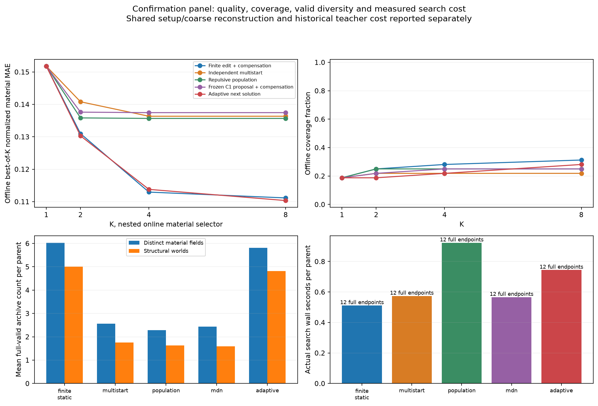
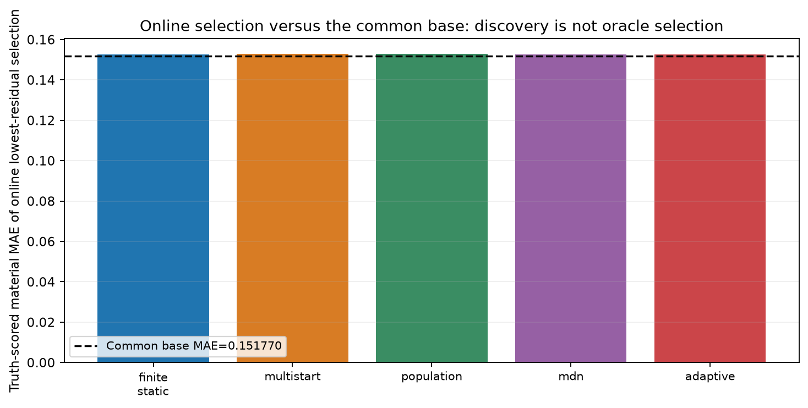
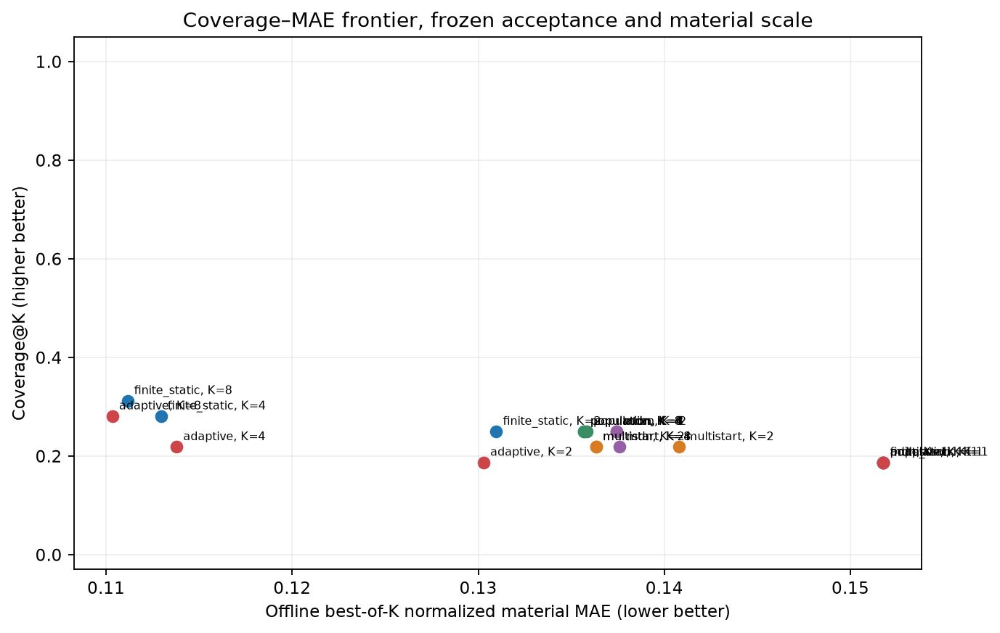
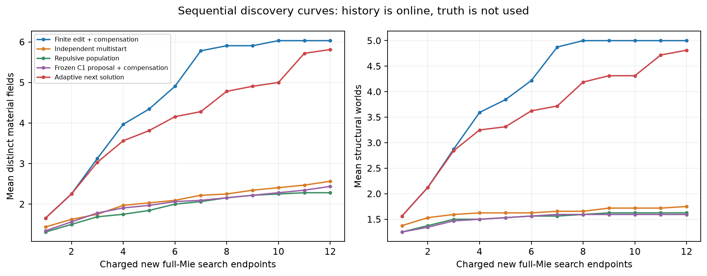
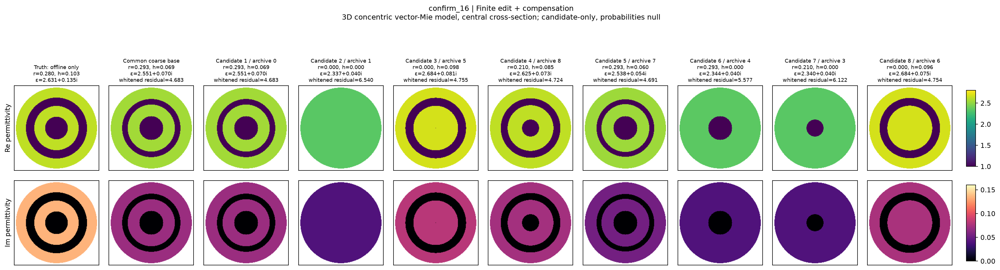
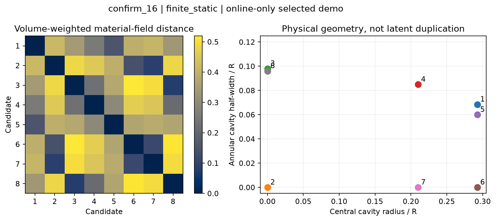
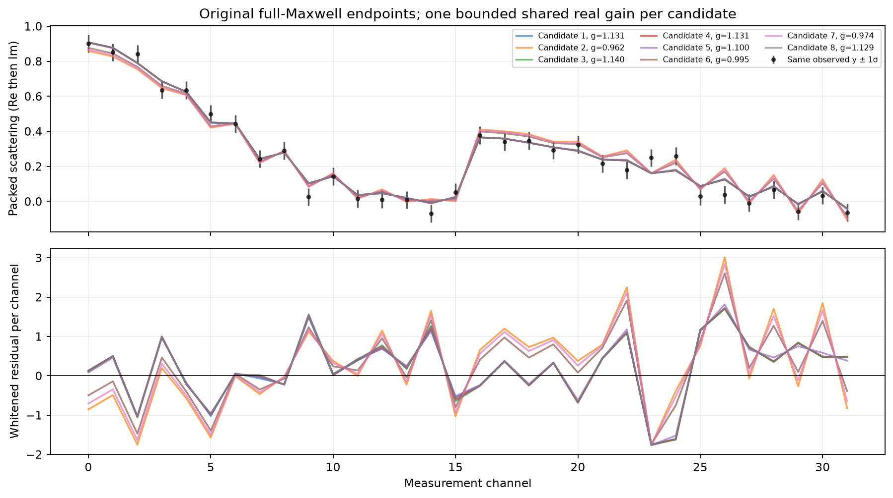

Research A · frozen confirmation experiment
同一份散射测量，继续寻找下一种材料世界
有限结构编辑 → 有界非线性补偿 → 原始 full-Maxwell endpoint → 材料空间去重
这里展示真实保存的候选；概率不是研究主目标，全部 posterior probability = null。
范围：三维矢量 Maxwell 的同心径向分层球，图像是中心截面，不代表一般三维未知形状。候选均使用原始 full-Mie 检验；合法材料数量、显著结构数量与后验模式数量是不同概念。Best-of-K 与 truth 仅用于离线评分。
阅读入口 · 中文研究报告 · 原始评分 · 机器可读展示数据 · 成本账本
完整确认面板的实测结果
Best-of-4 是离线真值评分。Selected 是在线只按 full 残差选出的单张材料；两者不能混同。候选数含共同基础解。
材料候选
默认展示预注册的第一 confirmation parent。其他案例和方法保持同一材料色标。
Coverage–MAE–Cost 与发现历史
每个方法使用相同接受条件和材料距离。图中成本来自本轮实际保存的搜索费用；共同 setup、基础重建、历史 bank/teacher 等费用另外记录，不能据此宣称端到端加速。




在线规则选出的结构展示案例



二维困难条件
解释边界
同一观测下多个合法且材料上不同的解，不能自动证明 posterior calibration、全局唯一性结论或重要解族全部发现。未探索结构状态未量化；模型外概率质量为 null。候选 online 排序不访问 truth。没有用 residual softmax 生成虚假概率。
原始失败、重复候选、保护结构丢失和费用应与成功一起阅读。科学结论以父 Codex 最终研究报告为准。